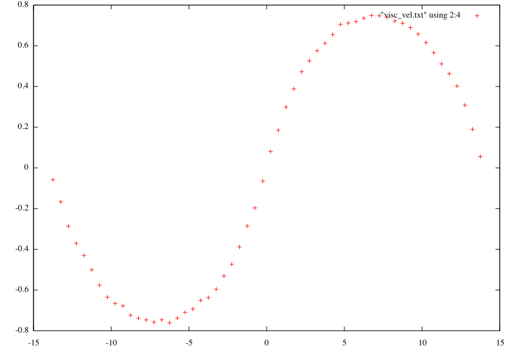

The theory is described in “Poiseuille flow to measure the viscosity of particle model fluids” by J. A. Backer et al. Below
I describe how to use this approach in LAMMPS.
boundary p p p
units lj
atom_style atomic
lattice custom 3.0 a1 1.0 0.0 0.0 a2 0.0 1.0 0.0 a3 0.0 0.0 1.0 &
basis 0.5 0.0 0.0 basis 0.0 0.5 0.0 basis 0.0 0.0 0.5
region box block -7.0 7.0 -7.0 7.0 -14.0 14.0
region left block -7.0 7.0 -7.0 7.0 -14.0 0.0
region right block -7.0 7.0 -7.0 7.0 0.0 14.0
# Uncomment it if you don't use restart file
create_box 1 box
create_atoms 1 box
mass 1 1.0
neighbor 0.3 bin
neigh_modify delay 0 every 4 check no
#******************DPD******************
#to store velocities by ghost atoms
#communicate single vel yes - for old versions of lammps
comm_style brick
comm_modify vel yes
# T cutoff seed
pair_style dpd 0.1 1.0 34387
# atom_type atom_type a gamma=sigma^2/2 cutoff(optional)
# where a is Fc coefficent.
pair_coeff 1 1 25.0 45.0 1.0
thermo 500
timestep 0.01
fix 1 all nve
fix 2 all addforce -0.055 0.0 0.0 region left
fix 3 all addforce 0.055 0.0 0.0 region right
fix 4 all ave/spatial 50 1000 50000 z center 0.5 vx file vel-visc.txt
run 100000
(2) Open vel-visc and copy in a separate document data for one time step.
(3) Open gnuplot, type:
1
gnuplot> plot "visc_vel.txt" using 2:4
The result should be something like:

(4) From analytical solution for the problem, it is known that .
Where , p - is numeric density(3.0 in our case,
determined by custom lattice), g is driving force (0.055), n - dynamic viscosity.
In order to find alpha we will use gnuplot’s fit command. As you might see on the Figure above, there are 2 parabolas.
I pick the left one, so the analytical solution look like .
Then type
123
gnuplot> f(x)=a*(x*14 + x*x)
gnuplot> fit f(x) 'visc_vel.txt' using 2:4 via a
gnuplot> plot "visc_vel.txt" using 2:4, f(x)
The result should be , thus viscosity n=2.68 in DPD units.
The plot with velocities from simulation and with the fitting plot should look like that: